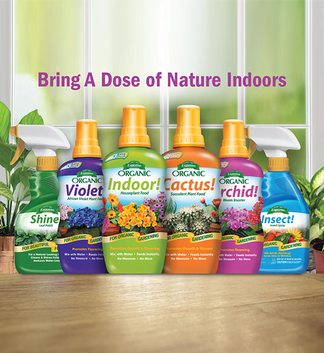
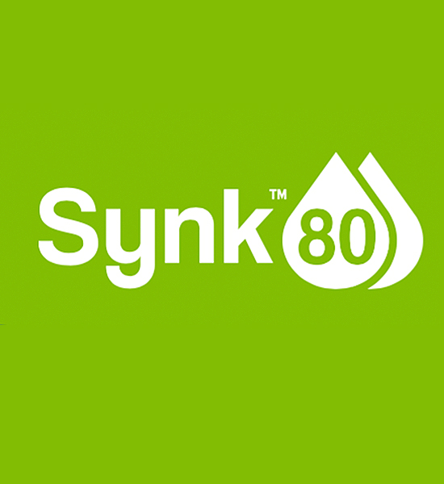
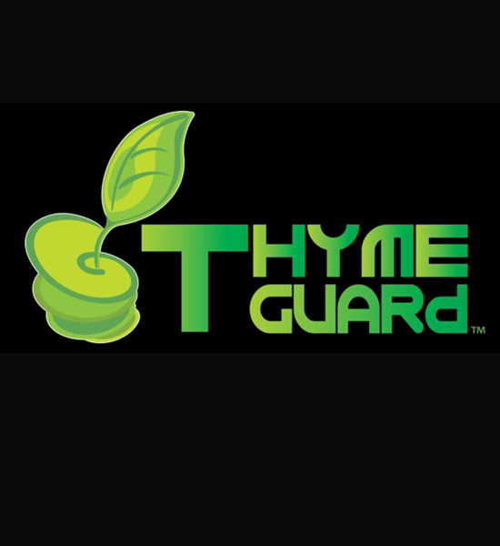
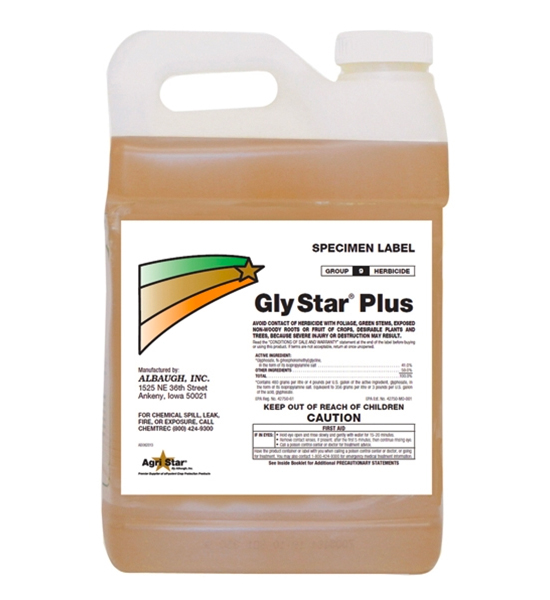
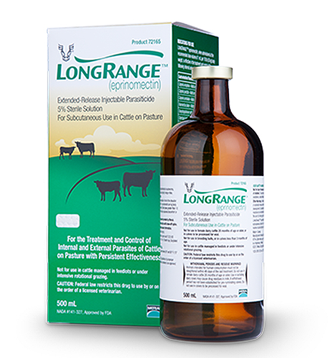
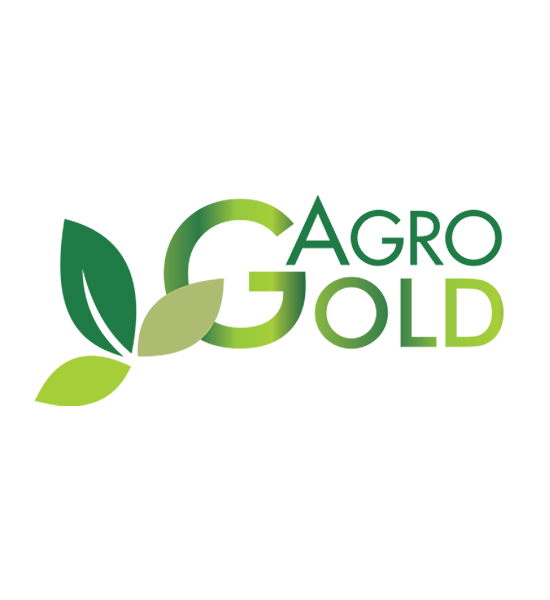
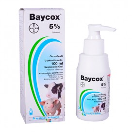
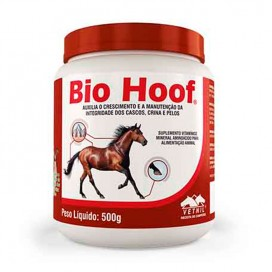

Sierra-Soluciones S.A.
Prestigio Agropecuario y Agricola por mas de 53 años.
¿Quiénes Somos?
Historia
Sierra Soluciones. Inicio sus operaciones hace más de 53 años. Es la empresa líder en la comercialización de productos para la salud y nutrición animal así como en equipos y maquinaria agricola. El terremoto de 1972 y luego la guerra que sufrió Nicaragua, fueron dos situaciones donde el negocio se ve afectado. Pero lo empresa en ambas épocas logra resurgir y se mantiene en la década de los 80. A partir de 1,990, se reabasteció el mercado, se amplió la gama de productos y la red de distribución, se abrieron sucursales en diversos puntos de Managua y en los principales departamentos del país. Al día de hoy contamos con más de 180 colaboradores. Valorando la experiencia de los que tienen más tiempo y la energía de las nuevas generaciones. Nuestra mayor aspiración, es mantener nuestro liderazgo.
Nuestra Vision
Ser el principal referente de marca de productos de salud, y nutrición animal. Al igual que en equipos para la agricultura en Nicaragua.
Nuestra Mision
Proveer a nuestros clientes, productos y servicios de primera calidad, a través de una asesoría técnica confiable, brindada por personal altamente calificado y motivados para ser los mejores.
Valores
• Nuestra búsqueda constante de la Calidad. • La pasión por el buen Servicio. • La Transparencia para con nuestros clientes y colaboradores internos. • El Profesionalismo como guía de nuestras acciones.
Nuestros Servicios
Sierra Soluciones se a destacado por la información técnica que ofrece a su clientela a través de seminarios, reuniones de agricultores, exhibiciones y en su publicación mensual de Servicios Informa. El conocimiento del producto es de mayor importancia en el uso correcto y eficiente del mismo y Sierra Soluciones se distingue por llevar este conocimiento al usuario cumpliendo así con la información en la etiqueta.
Sierra Soluciones tiene además la capacidad para diseñar sistemas de riego, entrenar a los usuarios y ofrecer consultoría. Contamos con una amplia gama de productos de riego para las distintas operaciones de irrigación en la finca y en el jardín.
Con el inventario más grande en productos y suministros para golf. Soluciones profesionales para clientes exigentes.

Sierra Soluciones y su equipo de profesionales expertos, da consultoría y apoyo a los clientes de la jardinería ofreciéndole los mejores productos y el mejor servicio.
Conocé Más
Maquinarias
Equipos Ganaderos
Productos
ESPOMA

BIENVENIDOS A LA INNOVACION! Nuevos fertilizantes orgánicos de Espoma. Cada uno en una concentración líquida que contiene proteínas naturales y microbios beneficiosos. Vierte la cantidad exacta del producto con la innovadora “Easy Dose System”.
SYNK80

Synk80 es un surfactante efectivo que reduce las barreras hidrofóbicas del suelo, extendiendo el movimiento lateral del agua para hidratación optima del cultivo mejorando el crecimiento de las raíces. Crea un perfil uniforme de humedad en el suelo aumentando así el impacto de los nutrientes en la zona de las raíces.
THYME GUARD

Thyme Guard es un fungicida, insecticida y bactericida sistémico en forma líquida. Es un producto orgánico de amplio espectro hecho a base de extracto de aceite de tomillo para uso en todas las cosechas incluyendo grama y ornamentales. Es 100% biodegradable y se puede utilizar solo o junto a otros productos y aplicar hasta el día de la cosecha. Thyme Guard es para uso en todas las cosechas, incluyendo grama y ornamentales.
GLY STAR K-PLUS

Gly Star K-Plus es un herbicida sistémico post-emergente que contiene 5.5 libras por galón del ingrediente activo glifosato. Gly Star K-Plus no es selectivo y proporciona un control de amplio espectro de muchas malezas. Puede aplicarse a través de la mayoría de los pulverizadores estándar industriales o de campo después de la dilución y de la mezcla completa con el agua u otros portadores según las instrucciones de la etiqueta.
LONGRANGE

Rompe el ciclo de vida de los parásitos con LongRange. La primera vacuna de eprinomectina de liberación prolongada, ofreciendo 150 días de protección contra parásitos.
AGRO GOLD

Agro Gold es una mezcla de quitosano en forma líquida (derivado de la harina de camarón) y Bacillus chitinosporus. Entre los beneficios de utilizar Agro Gold están: Aumenta la fotosíntesis, la absorción de nutrientes e incrementa la germinación.
BAYCOX 5%

Indicaciones Baycox 5% está indicado para el tratamiento y control de infecciones causadas por coccidias y protozoarios. Su excelente acción permite su empleo en programas preventivos, terapéuticos y de control. Su amplio espectro incluye todas las especies de coccidias de mamíferos. Baycox 5% también es efectivo contra Toxoplasma, sarcocystis y Theileria spp.
BIO HOOF

Mundialmente comprobada, la composición de biotina, lisina y metionina promueve el crecimiento y desarrollo normales de los cascos.Los elementos zinc y azufre acarrean estas vitaminas y aminoácidos hasta el epitelio del casco, propiciando el estímulo del crecimiento, manteniendo las características morfológicas, plásticas y funcionales ideales de los cascos y pelos de los animales.
Para consultar mas sobre nuestros productos visite: Tienda Sierra-Soluciones